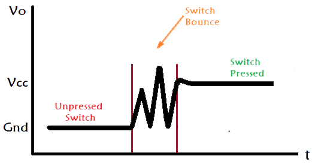
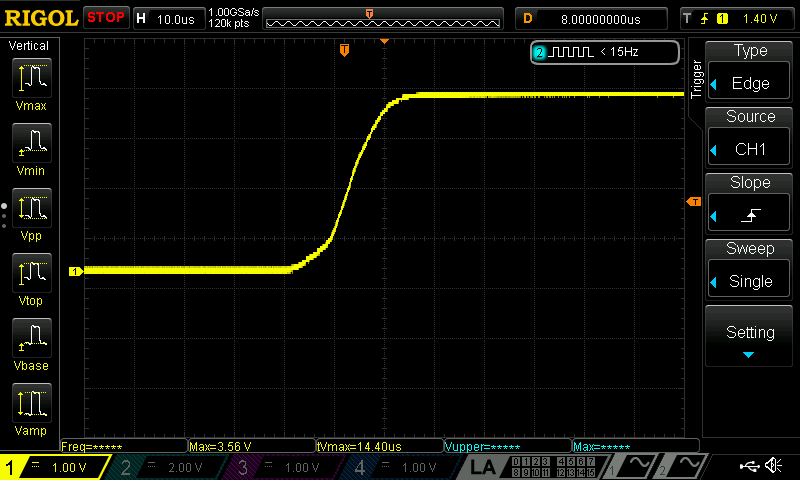

Lab 3: FPGA and MCU Setup and Testing
Introduction
In this lab we learn how to use the FPGA to scan inputs from a 4x4 keypad.
Lab Overview
The goal of this lab was to use 16 button keypad to display the last two hexadecimal digitals pressed on the double seven segment display. This becomes more tricky than it sounds. This is because the FPGA must fight against switch bouncing and metastability. The keypad is just a series of rows and columns that are connected depending on which button is pressed. When pushed a connection is formed and there is a short between the specific row and column.
Switch bouncing displayed in the diagram below, is the phenomenon where signals from a switch can appear as if they are flipped on and off repeatedly in an extremely short time frame. This is due to the physical characteristic of buttons. When the two peices of metal come together to form a connection they make contact initially for a small amount of time and then seperate until connecting again, repeating this cycle until it is fully connected.

Depending on your button you might see zero switch bouncing or extreme switch bouncing ranging from a few micro seconds to milliseconds. After testing the lab keypad I found that they had zero switch bouncing on any button as you can see from the oscilloscope below. However this lab’s code still acounted for it incase other keypads were used.

The other problem the keypad has is metastability. Metastability can happen with digital logic when physical inputs don’t line up with the clock cycles correctly and are incorrectly sampled before the signal is fully stable. To fix that synchronizers were used to make sure the signal was stable. This can be accomlished using multiple flip flops and only using the stable output.
Design the FSM
To design this lab we had to implement an FSM to make sure that when a button held it is only registered as one valid press and you can’t press other buttons while its held. The following FSM was used.
For this lab I decided that the FGPA would output a signal to drive the rows high and the columns would be inputs to the FPGA to show when there is a vaild connection. However you can’t scan all four rows at the same time as then whenever a column recieved an input you wouldn’t be able to tell which button in the column it came from. To fix this the FSM scanned all the rows. Driving each one high seperately for one clock cycle each until the FPGA recieved a valid column signal. The FSM would then branch out holding that one row high to help determine which button is being pressed, and then it would enable the seven segment decoder to show a new number. Once the button is released it goes back to scanning.
The systemVerilog code followed the following block diagram.
In the top level module we defined the HSOSC and inputed that into the Master module. The master module then slowed down the clk and inverted the reset as the onboard switches use pull up resistors. The inputs c and reset then went into the synchronizer where we used two flip flops to make sure that c was stable as it entered the FSM. In the FSM en, counter, and rowPressed was generated which were used in the buttonDecoder and ledController. The FSM also determined which rows were powered by determining the logic for r. buttonDecoder took in c and rowPressed and then determined which four bit hexadecimal number it corresponded to outputting it as s. s,en, counter, clk, and reset was inputed into ledController which was built upon the last lab and was able to use time multiplexing to drive two seven segments displays outputting which seven segment should be based on led1 and led2 as well as the number seg. Additionally it used counter to create a digital low pass filter and make sure that if there was any switch bouncing it would not incorrectly affect the output.
Testing all the Modules
Due this labs complexity a lot more was tested in simulation before it was uploaded to the FPGA and wired up. The modules simulated were buttonFSM, ledController, and buttonDecoder. We first tested the buttonDecoder module. This involved making a simple testbench that gave it some example key presses to determine if it would output the correct 4-bit signal representing the hexadecimal pressed. From the wave below you can see that it outputs the correct signal based on the key pressed. You can also see that when two keys pressed together are simulated the ledDecoder goes to its default case statement of F however concerning the FSM should prevent two keys from being pressed simultaneously.
The next module tested was ledController. The idea behind ledController is similar to last lab where it drives a double seven segment display. However we also wanted it to shift the numbers over as a new one was pressed, shifting everything left and adding the new onw on the right if it had the proper enable from the FSM. From the wave output below it shows that s1 and s2 the two hexidecimal numbers for the two led displays only change when en is high and shift properly, with s1 getting s and s2 getting s1 in a flip flop. Additionally ledController switched which seven segment was on at the right speed and outputted the corresponding seven bit seg number to turn on certain diodes.
The final module tested was the FSM. For the testbench of the FSM, it was simply initialized as the device under test and then reset. On the wave we can see that after it is reset it properly scans through all the rows powering them high. Then we can input a single column pretending as if there is a real time input. This results in a specific row staying high until the FSM move into the next state where all the rows are high so we don’t see any of the errors mentioned in my blog, until the button is released. However we have the rowPressed variable at the bottom that keep track of which row was pressed initially so that the ledDecoder works properly. It then returns to scanning again. Near the end of the wave an input of 1000 half a clock cycle later the input changes to 1100 simulating someone pressing another button. The module however does not change the colPressed and will output the correct hexadecimal number
Wiring up the board
After making sure the simulated modules worked correctly they were uploaded to radiant and the board was wired to the following specification below.
The FGPA pins were then connected to the correct outputs and inputs in radiant, the video below shows a working lab3 where the the button pressed on the keypad show up on the dual seven segment display. 100kOhm resistors were used on the columns of the keypad to act as pulldown resistors showing a valid low signal when nothing was pressed. The resistors for the diode and dual seven segment display were kept the same from last lab.
Outcome
This lab turned out to be a success. However this lab writeup makes it seem easier than it was. There were dozens of small bugs and features that did not work initially and had to be reformed and changed. It was quite frustrating however I learn how to use the oscilloscope and simulation to my benefit. In the end the keypad was able to communicate user input to the FPGA shifting the dual seven segment display to the correct number on the right side. Additionally the synchronizers were used to get rid of metastable inputs, the FSM countered any switch bouncing from the keypad, and it properly dealt with multiple key presses at once.
Time in lab: 23 Hours.